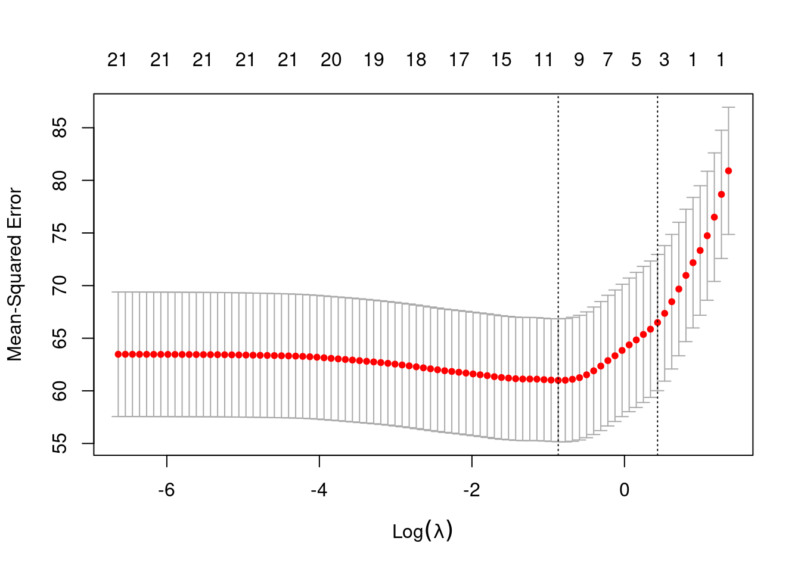
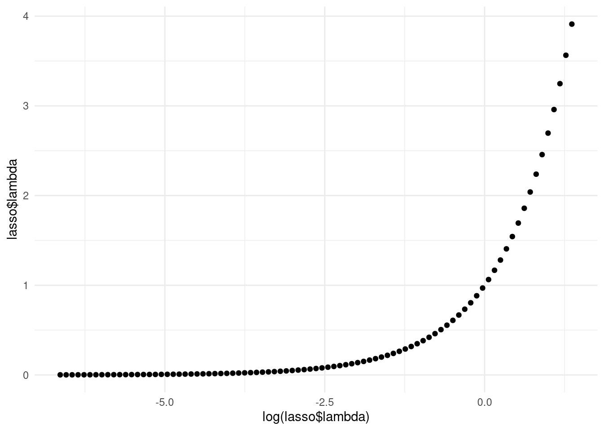

Chapter 5 Decision Trees
5.2 Load data
Load train_x_class, train_y_class, test_x_class, and test_y_class variables we defined in 02-preprocessing.Rmd for this classification task.
5.3 Overview
Decision trees are recursive partitioning methods that divide the predictor spaces into simpler regions and can be visualized in a tree-like structure. They attempt to classify data by dividing it into subsets according to a Y output variable and based on some predictors.
Let’s see how a decision tree classifies if a person suffers from heart disease (target = 1) or not (target = 0).
5.4 Fit Model
set.seed(3)
tree = rpart::rpart(train_y_class ~ ., data = train_x_class,
# Use method = "anova" for a continuous outcome.
method = "class",
# Can use "gini" for gini coefficient.
parms = list(split = "information"))
# https://stackoverflow.com/questions/4553947/decision-tree-on-information-gain
# Here is the text-based display of the decision tree. Yikes! :^(
print(tree)## n= 213
##
## node), split, n, loss, yval, (yprob)
## * denotes terminal node
##
## 1) root 213 97 1 (0.45539906 0.54460094)
## 2) thal_X2< 0.5 100 25 0 (0.75000000 0.25000000)
## 4) exang>=0.5 47 3 0 (0.93617021 0.06382979) *
## 5) exang< 0.5 53 22 0 (0.58490566 0.41509434)
## 10) thalach< 130 7 0 0 (1.00000000 0.00000000) *
## 11) thalach>=130 46 22 0 (0.52173913 0.47826087)
## 22) chol>=244 19 5 0 (0.73684211 0.26315789) *
## 23) chol< 244 27 10 1 (0.37037037 0.62962963)
## 46) chol< 230 20 9 1 (0.45000000 0.55000000)
## 92) oldpeak>=0.7 8 2 0 (0.75000000 0.25000000) *
## 93) oldpeak< 0.7 12 3 1 (0.25000000 0.75000000) *
## 47) chol>=230 7 1 1 (0.14285714 0.85714286) *
## 3) thal_X2>=0.5 113 22 1 (0.19469027 0.80530973)
## 6) thalach< 162.5 62 19 1 (0.30645161 0.69354839)
## 12) sex_X1>=0.5 29 14 0 (0.51724138 0.48275862)
## 24) thalach< 131.5 8 1 0 (0.87500000 0.12500000) *
## 25) thalach>=131.5 21 8 1 (0.38095238 0.61904762)
## 50) thalach>=156.5 7 2 0 (0.71428571 0.28571429) *
## 51) thalach< 156.5 14 3 1 (0.21428571 0.78571429) *
## 13) sex_X1< 0.5 33 4 1 (0.12121212 0.87878788) *
## 7) thalach>=162.5 51 3 1 (0.05882353 0.94117647) *Although interpreting the text can be intimidating, a decision tree’s main strength is its tree-like plot, which is much easier to interpret.
5.5 Investigate Results

We can also look inside of tree to see what we can unpack. “variable.importance” is one we should check out!
## [1] "frame" "where" "call"
## [4] "terms" "cptable" "method"
## [7] "parms" "control" "functions"
## [10] "numresp" "splits" "variable.importance"
## [13] "y" "ordered"## thal_X2 thalach thal_X3 exang oldpeak slope_X2 chol
## 34.8546153 33.5429632 29.6264230 20.1781088 19.8238634 12.8908263 9.4650464
## sex_X1 age ca_X2 trestbps cp_X2 slope_X1 ca_X3
## 6.4228665 3.4926165 2.1173837 1.9228895 0.9689174 0.8355620 0.5555638Plot variable importance
# Turn the tree$variable.importance vector into a dataframe
tree_varimp = data.frame(tree$variable.importance)
# Add rownames as their own column
tree_varimp$x = rownames(tree_varimp)
# Reorder clumns
tree_varimp = tree_varimp[, c(2,1)]
# Reset row names
rownames(tree_varimp) = NULL
# Rename columns
names(tree_varimp) = c("Variable", "Importance")
tree_varimp## Variable Importance
## 1 thal_X2 34.8546153
## 2 thalach 33.5429632
## 3 thal_X3 29.6264230
## 4 exang 20.1781088
## 5 oldpeak 19.8238634
## 6 slope_X2 12.8908263
## 7 chol 9.4650464
## 8 sex_X1 6.4228665
## 9 age 3.4926165
## 10 ca_X2 2.1173837
## 11 trestbps 1.9228895
## 12 cp_X2 0.9689174
## 13 slope_X1 0.8355620
## 14 ca_X3 0.5555638# Plot
ggplot(tree_varimp, aes(x = reorder(Variable, Importance),
y = Importance)) +
geom_bar(stat = "identity") +
theme_bw() + coord_flip() + xlab("")
In decision trees the main hyperparameter (configuration setting) is the complexity parameter (CP), but the name is a little counterintuitive; a high CP results in a simple decision tree with few splits, whereas a low CP results in a larger decision tree with many splits.
rpart uses cross-validation internally to estimate the accuracy at various CP settings. We can review those to see what setting seems best.
Print the results for various CP settings - we want the one with the lowest “xerror”. We can also plot the performance estimates for different CP settings.
##
## Classification tree:
## rpart::rpart(formula = train_y_class ~ ., data = train_x_class,
## method = "class", parms = list(split = "information"))
##
## Variables actually used in tree construction:
## [1] chol exang oldpeak sex_X1 thal_X2 thalach
##
## Root node error: 97/213 = 0.4554
##
## n= 213
##
## CP nsplit rel error xerror xstd
## 1 0.515464 0 1.00000 1.00000 0.074930
## 2 0.024055 1 0.48454 0.48454 0.062394
## 3 0.020619 4 0.41237 0.54639 0.065048
## 4 0.010000 10 0.27835 0.52577 0.064207
# Trees of similar sizes might appear to be tied for lowest "xerror", but a tree with fewer splits might be easier to interpret.
tree_pruned2 = prune(tree, cp = 0.028986) # 2 splits
tree_pruned6 = prune(tree, cp = 0.010870) # 6 splitsPrint detailed results, variable importance, and summary of splits.
## Call:
## rpart::rpart(formula = train_y_class ~ ., data = train_x_class,
## method = "class", parms = list(split = "information"))
## n= 213
##
## CP nsplit rel error xerror xstd
## 1 0.5154639 0 1.0000000 1.0000000 0.07492958
## 2 0.0289860 1 0.4845361 0.4845361 0.06239380
##
## Variable importance
## thal_X2 thal_X3 thalach slope_X2 oldpeak exang
## 31 27 12 10 10 9
##
## Node number 1: 213 observations, complexity param=0.5154639
## predicted class=1 expected loss=0.4553991 P(node) =1
## class counts: 97 116
## probabilities: 0.455 0.545
## left son=2 (100 obs) right son=3 (113 obs)
## Primary splits:
## thal_X2 < 0.5 to the left, improve=34.85462, (0 missing)
## thal_X3 < 0.5 to the right, improve=28.43737, (0 missing)
## exang < 0.5 to the right, improve=24.63531, (0 missing)
## thalach < 150.5 to the left, improve=19.62708, (0 missing)
## oldpeak < 0.75 to the right, improve=17.97881, (0 missing)
## Surrogate splits:
## thal_X3 < 0.5 to the right, agree=0.930, adj=0.85, (0 split)
## thalach < 150.5 to the left, agree=0.709, adj=0.38, (0 split)
## slope_X2 < 0.5 to the left, agree=0.685, adj=0.33, (0 split)
## oldpeak < 1.55 to the right, agree=0.681, adj=0.32, (0 split)
## exang < 0.5 to the right, agree=0.671, adj=0.30, (0 split)
##
## Node number 2: 100 observations
## predicted class=0 expected loss=0.25 P(node) =0.4694836
## class counts: 75 25
## probabilities: 0.750 0.250
##
## Node number 3: 113 observations
## predicted class=1 expected loss=0.1946903 P(node) =0.5305164
## class counts: 22 91
## probabilities: 0.195 0.805
## Call:
## rpart::rpart(formula = train_y_class ~ ., data = train_x_class,
## method = "class", parms = list(split = "information"))
## n= 213
##
## CP nsplit rel error xerror xstd
## 1 0.51546392 0 1.0000000 1.0000000 0.07492958
## 2 0.02405498 1 0.4845361 0.4845361 0.06239380
## 3 0.02061856 4 0.4123711 0.5463918 0.06504837
## 4 0.01000000 10 0.2783505 0.5257732 0.06420680
##
## Variable importance
## thal_X2 thalach thal_X3 exang oldpeak slope_X2 chol sex_X1
## 20 19 17 11 11 7 5 4
## age ca_X2 trestbps cp_X2
## 2 1 1 1
##
## Node number 1: 213 observations, complexity param=0.5154639
## predicted class=1 expected loss=0.4553991 P(node) =1
## class counts: 97 116
## probabilities: 0.455 0.545
## left son=2 (100 obs) right son=3 (113 obs)
## Primary splits:
## thal_X2 < 0.5 to the left, improve=34.85462, (0 missing)
## thal_X3 < 0.5 to the right, improve=28.43737, (0 missing)
## exang < 0.5 to the right, improve=24.63531, (0 missing)
## thalach < 150.5 to the left, improve=19.62708, (0 missing)
## oldpeak < 0.75 to the right, improve=17.97881, (0 missing)
## Surrogate splits:
## thal_X3 < 0.5 to the right, agree=0.930, adj=0.85, (0 split)
## thalach < 150.5 to the left, agree=0.709, adj=0.38, (0 split)
## slope_X2 < 0.5 to the left, agree=0.685, adj=0.33, (0 split)
## oldpeak < 1.55 to the right, agree=0.681, adj=0.32, (0 split)
## exang < 0.5 to the right, agree=0.671, adj=0.30, (0 split)
##
## Node number 2: 100 observations, complexity param=0.02405498
## predicted class=0 expected loss=0.25 P(node) =0.4694836
## class counts: 75 25
## probabilities: 0.750 0.250
## left son=4 (47 obs) right son=5 (53 obs)
## Primary splits:
## exang < 0.5 to the right, improve=9.107824, (0 missing)
## oldpeak < 0.55 to the right, improve=7.288376, (0 missing)
## ca_X2 < 0.5 to the right, improve=5.808354, (0 missing)
## chol < 241.5 to the right, improve=4.012963, (0 missing)
## thalach < 143.5 to the left, improve=4.012963, (0 missing)
## Surrogate splits:
## oldpeak < 1.45 to the right, agree=0.69, adj=0.340, (0 split)
## thalach < 143.5 to the left, agree=0.67, adj=0.298, (0 split)
## chol < 209 to the left, agree=0.59, adj=0.128, (0 split)
## ca_X2 < 0.5 to the right, agree=0.59, adj=0.128, (0 split)
## cp_X2 < 0.5 to the left, agree=0.58, adj=0.106, (0 split)
##
## Node number 3: 113 observations, complexity param=0.02061856
## predicted class=1 expected loss=0.1946903 P(node) =0.5305164
## class counts: 22 91
## probabilities: 0.195 0.805
## left son=6 (62 obs) right son=7 (51 obs)
## Primary splits:
## thalach < 162.5 to the left, improve=6.087666, (0 missing)
## age < 43.5 to the right, improve=5.932377, (0 missing)
## exang < 0.5 to the right, improve=4.069956, (0 missing)
## sex_X1 < 0.5 to the right, improve=3.864076, (0 missing)
## cp_X2 < 0.5 to the left, improve=2.696136, (0 missing)
## Surrogate splits:
## age < 44.5 to the right, agree=0.708, adj=0.353, (0 split)
## oldpeak < 0.05 to the right, agree=0.655, adj=0.235, (0 split)
## slope_X2 < 0.5 to the left, agree=0.628, adj=0.176, (0 split)
## chol < 228 to the right, agree=0.619, adj=0.157, (0 split)
## slope_X1 < 0.5 to the right, agree=0.611, adj=0.137, (0 split)
##
## Node number 4: 47 observations
## predicted class=0 expected loss=0.06382979 P(node) =0.2206573
## class counts: 44 3
## probabilities: 0.936 0.064
##
## Node number 5: 53 observations, complexity param=0.02405498
## predicted class=0 expected loss=0.4150943 P(node) =0.2488263
## class counts: 31 22
## probabilities: 0.585 0.415
## left son=10 (7 obs) right son=11 (46 obs)
## Primary splits:
## thalach < 130 to the left, improve=4.127656, (0 missing)
## chol < 241.5 to the right, improve=4.019100, (0 missing)
## slope_X1 < 0.5 to the right, improve=2.587220, (0 missing)
## oldpeak < 0.55 to the right, improve=2.409715, (0 missing)
## ca_X1 < 0.5 to the right, improve=2.155362, (0 missing)
##
## Node number 6: 62 observations, complexity param=0.02061856
## predicted class=1 expected loss=0.3064516 P(node) =0.2910798
## class counts: 19 43
## probabilities: 0.306 0.694
## left son=12 (29 obs) right son=13 (33 obs)
## Primary splits:
## sex_X1 < 0.5 to the right, improve=5.934370, (0 missing)
## exang < 0.5 to the right, improve=3.450694, (0 missing)
## age < 45.5 to the right, improve=2.754083, (0 missing)
## thalach < 128 to the left, improve=1.957620, (0 missing)
## cp_X2 < 0.5 to the left, improve=1.312792, (0 missing)
## Surrogate splits:
## trestbps < 126.5 to the left, agree=0.597, adj=0.138, (0 split)
## thalach < 111.5 to the left, agree=0.597, adj=0.138, (0 split)
## chol < 247 to the left, agree=0.581, adj=0.103, (0 split)
## exang < 0.5 to the right, agree=0.581, adj=0.103, (0 split)
## oldpeak < 1.7 to the right, agree=0.581, adj=0.103, (0 split)
##
## Node number 7: 51 observations
## predicted class=1 expected loss=0.05882353 P(node) =0.2394366
## class counts: 3 48
## probabilities: 0.059 0.941
##
## Node number 10: 7 observations
## predicted class=0 expected loss=0 P(node) =0.03286385
## class counts: 7 0
## probabilities: 1.000 0.000
##
## Node number 11: 46 observations, complexity param=0.02405498
## predicted class=0 expected loss=0.4782609 P(node) =0.2159624
## class counts: 24 22
## probabilities: 0.522 0.478
## left son=22 (19 obs) right son=23 (27 obs)
## Primary splits:
## chol < 244 to the right, improve=3.0938120, (0 missing)
## slope_X1 < 0.5 to the right, improve=1.1200410, (0 missing)
## oldpeak < 0.55 to the right, improve=1.0801890, (0 missing)
## ca_X1 < 0.5 to the right, improve=1.0556600, (0 missing)
## fbs < 0.5 to the left, improve=0.9420478, (0 missing)
## Surrogate splits:
## oldpeak < 2.45 to the right, agree=0.674, adj=0.211, (0 split)
## sex_X1 < 0.5 to the left, agree=0.652, adj=0.158, (0 split)
## age < 66.5 to the right, agree=0.630, adj=0.105, (0 split)
## trestbps < 175 to the right, agree=0.630, adj=0.105, (0 split)
## ca_X2 < 0.5 to the right, agree=0.630, adj=0.105, (0 split)
##
## Node number 12: 29 observations, complexity param=0.02061856
## predicted class=0 expected loss=0.4827586 P(node) =0.1361502
## class counts: 15 14
## probabilities: 0.517 0.483
## left son=24 (8 obs) right son=25 (21 obs)
## Primary splits:
## thalach < 131.5 to the left, improve=3.114765, (0 missing)
## oldpeak < 0.7 to the right, improve=1.474869, (0 missing)
## exang < 0.5 to the right, improve=1.244272, (0 missing)
## slope_X1 < 0.5 to the right, improve=1.043420, (0 missing)
## age < 48 to the right, improve=1.012565, (0 missing)
## Surrogate splits:
## trestbps < 158 to the right, agree=0.793, adj=0.250, (0 split)
## chol < 177.5 to the left, agree=0.793, adj=0.250, (0 split)
## age < 66.5 to the right, agree=0.759, adj=0.125, (0 split)
## ca_X3 < 0.5 to the right, agree=0.759, adj=0.125, (0 split)
##
## Node number 13: 33 observations
## predicted class=1 expected loss=0.1212121 P(node) =0.1549296
## class counts: 4 29
## probabilities: 0.121 0.879
##
## Node number 22: 19 observations
## predicted class=0 expected loss=0.2631579 P(node) =0.08920188
## class counts: 14 5
## probabilities: 0.737 0.263
##
## Node number 23: 27 observations, complexity param=0.02061856
## predicted class=1 expected loss=0.3703704 P(node) =0.1267606
## class counts: 10 17
## probabilities: 0.370 0.630
## left son=46 (20 obs) right son=47 (7 obs)
## Primary splits:
## chol < 230 to the left, improve=1.1635270, (0 missing)
## oldpeak < 0.55 to the right, improve=1.0704030, (0 missing)
## age < 51 to the left, improve=0.7994748, (0 missing)
## cp_X2 < 0.5 to the right, improve=0.5670883, (0 missing)
## trestbps < 129 to the left, improve=0.4489296, (0 missing)
## Surrogate splits:
## ca_X3 < 0.5 to the left, agree=0.778, adj=0.143, (0 split)
##
## Node number 24: 8 observations
## predicted class=0 expected loss=0.125 P(node) =0.03755869
## class counts: 7 1
## probabilities: 0.875 0.125
##
## Node number 25: 21 observations, complexity param=0.02061856
## predicted class=1 expected loss=0.3809524 P(node) =0.09859155
## class counts: 8 13
## probabilities: 0.381 0.619
## left son=50 (7 obs) right son=51 (14 obs)
## Primary splits:
## thalach < 156.5 to the right, improve=2.4930920, (0 missing)
## trestbps < 126.5 to the left, improve=0.5781466, (0 missing)
## oldpeak < 0.7 to the right, improve=0.3857768, (0 missing)
## age < 55.5 to the right, improve=0.2673526, (0 missing)
## chol < 230.5 to the right, improve=0.2064966, (0 missing)
## Surrogate splits:
## chol < 278.5 to the right, agree=0.810, adj=0.429, (0 split)
## oldpeak < 1.4 to the right, agree=0.714, adj=0.143, (0 split)
##
## Node number 46: 20 observations, complexity param=0.02061856
## predicted class=1 expected loss=0.45 P(node) =0.09389671
## class counts: 9 11
## probabilities: 0.450 0.550
## left son=92 (8 obs) right son=93 (12 obs)
## Primary splits:
## oldpeak < 0.7 to the right, improve=2.5160730, (0 missing)
## chol < 211.5 to the right, improve=0.9240166, (0 missing)
## thalach < 161.5 to the left, improve=0.6024754, (0 missing)
## trestbps < 129 to the left, improve=0.4550471, (0 missing)
## slope_X2 < 0.5 to the left, improve=0.4550471, (0 missing)
## Surrogate splits:
## thalach < 139.5 to the left, agree=0.75, adj=0.375, (0 split)
## age < 65.5 to the right, agree=0.70, adj=0.250, (0 split)
## chol < 211.5 to the right, agree=0.70, adj=0.250, (0 split)
## ca_X2 < 0.5 to the right, agree=0.70, adj=0.250, (0 split)
## slope_X2 < 0.5 to the left, agree=0.65, adj=0.125, (0 split)
##
## Node number 47: 7 observations
## predicted class=1 expected loss=0.1428571 P(node) =0.03286385
## class counts: 1 6
## probabilities: 0.143 0.857
##
## Node number 50: 7 observations
## predicted class=0 expected loss=0.2857143 P(node) =0.03286385
## class counts: 5 2
## probabilities: 0.714 0.286
##
## Node number 51: 14 observations
## predicted class=1 expected loss=0.2142857 P(node) =0.0657277
## class counts: 3 11
## probabilities: 0.214 0.786
##
## Node number 92: 8 observations
## predicted class=0 expected loss=0.25 P(node) =0.03755869
## class counts: 6 2
## probabilities: 0.750 0.250
##
## Node number 93: 12 observations
## predicted class=1 expected loss=0.25 P(node) =0.05633803
## class counts: 3 9
## probabilities: 0.250 0.750
You can also get more fine-grained control by checking out the “control” argument inside the rpart function. Type ?rpart to learn more.
Be sure to check out gormanalysis excellent overview to help internalize what you learned in this example.
5.6 Challenge 2
Open Challenge 2 in the “Challenges” folder.